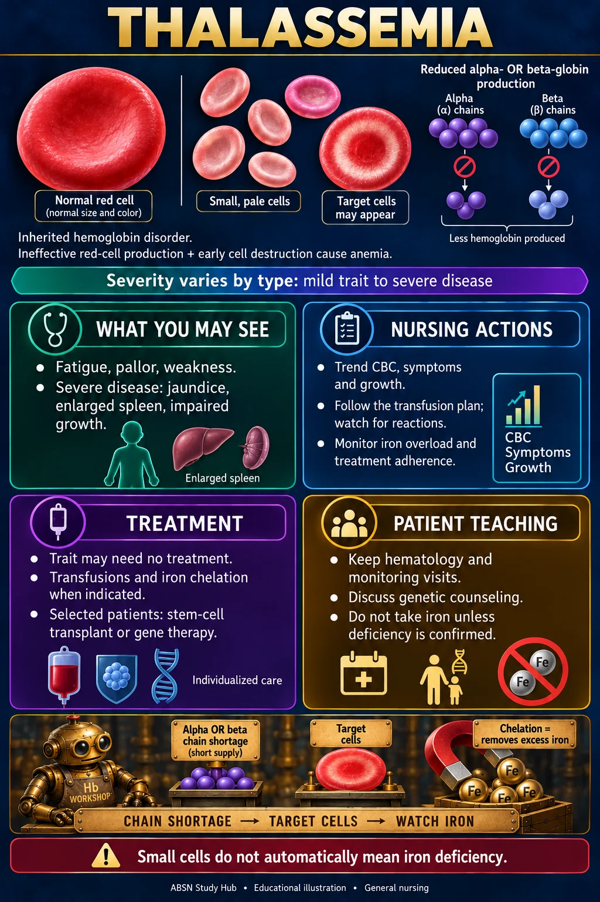

GENERAL NURSING · ANEMIA
Thalassemia
A globin-chain production problem. Severity and treatment vary by type.

🧬 What happens
- Inherited changes reduce alpha- or beta-globin production, depending on the type.
- Ineffective red-cell production and early red-cell destruction cause anemia.
- Severity varies from a carrier state or trait with little or no anemia to severe disease needing ongoing specialist care. Trait does not simply progress into severe disease.
🔬 What the picture shows
- The normal red cell is compared with smaller, paler red cells (microcytic, hypochromic).
- Target cells have a red central area, a pale surrounding ring and a red outer rim. They may occur in thalassemia, but are not diagnostic by themselves.
- Confirmation can involve CBC, iron studies, hemoglobin analysis and genetic testing. Alpha-thalassemia trait may not be evident on routine hemoglobin electrophoresis.
👀 Findings to recognize
- Fatigue, pallor, weakness and reduced exercise tolerance can reflect anemia.
- More severe disease may involve jaundice, an enlarged spleen and impaired growth.
🩺 Nursing actions
- Trend CBC, symptoms, growth in children and activity tolerance.
- Follow the individualized transfusion plan; assess for transfusion reactions.
- Track prescribed iron-overload monitoring, including ferritin trends and organ iron assessment when ordered. Iron overload can also occur through increased absorption in some non-transfusion-dependent forms.
- Support adherence, assess treatment side effects and help families keep follow-up appointments.
💊 Treatment
- Trait may require no treatment.
- Transfusions and iron chelation are used when indicated. Chelation removes excess iron; it is not iron replacement.
- Stem-cell transplantation or gene therapy may be options for selected patients after specialist assessment. Eligibility depends on type, severity and the treatment.
🏠 Patient and family education
- Do not assume microcytosis means iron deficiency. Take iron only when deficiency is confirmed and treatment is prescribed.
- Keep hematology, transfusion, chelation and monitoring appointments as applicable.
- Discuss genetic counseling and family or partner testing with the care team.
- Seek urgent care for severe breathing difficulty, chest pain or fainting. Report fever promptly, especially after splenectomy or during treatments that increase infection risk.
🗝 Memory hook — chain shortage → target cells → watch iron
- Short supply of chain parts = reduced alpha- OR beta-globin production.
- Target painted on a red cell = target cells may be seen; the picture is a schematic, not a diagnostic smear.
- Robot magnet collecting Fe = chelation removes excess iron. The magnet is only a memory symbol.
- Small cells do not automatically mean iron deficiency.
🧠 Quick recall
Does a low MCV automatically mean the patient should take iron?
Reveal the answer
No. Thalassemia can cause small red cells without iron deficiency. Confirm iron status and follow the prescribed plan.
📘 For the NUR 235 exam
Your Maternal & Child textbook's version for children — Cooley anemia, signs after about 6 months, frontal bossing, transfusions every 3–4 weeks, deferoxamine over 8–12 hours, and never iron — is on the Sickle Cell, Thalassemia, G6PD & Hemophilia page.
Sources and course placement
Created 11 October 2026. Course topic checked against NUR 235 Module 5 and NUR 258 Module 9. Supplemental references: